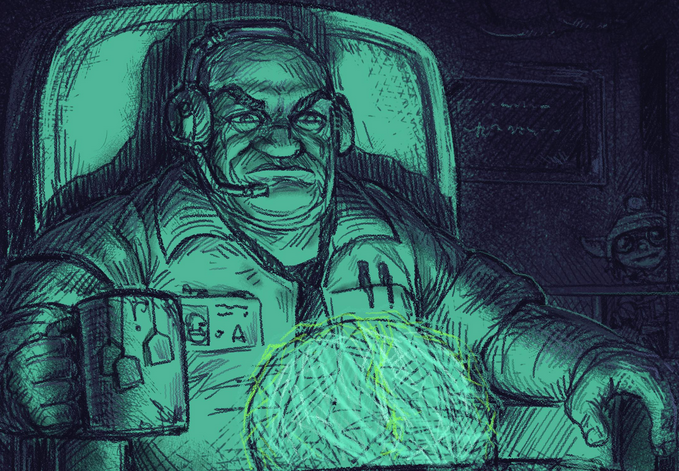

Design document
Table of Contents
Executive Manager (reverse-funded) contract⌗
Future dystopia in which Corporate wants to get resource from across the galaxy. This is you, an executive junior manager, doing a reverse-funded internship for VA Incorporated TM:
As many others, you are in charge of extracting all resources of interest from your assigned planet. To do so you will define rewards for tasks that can be accomplished, and the people corporate will migrate there will work on them. These rewards are the only way they can keep living there! These so-called Corporate Citizens are born under contract, and their lifespan is directly associated to their productivity.
Corporate knows this is a daunting task, and provides “Drunkyards TM” and “Weaponize.ME TM” buildings within your base. These are the main ways of getting entertainment and equipment for the CC living in the planet, so they will be able to grow and be more profitable!
This is great news, since if you do not reach the objectives you will be terminated as per clause V.12.3 section 3 paragraph 2:
But we do not expect this to happen to you! We would never hire lazy people that does not put the Company over everything else.
Introduction⌗
Every day you will define rewards for different available missions, and the CC living in your base will take upon them depending on the reward/risk ratio. Risk depends on the individual/group of CC which will partake on the mission, as it is relative to their abilities and equipment.
On the beginning most missions will be of scouting the planet, trying to find the areas with the most profitable resources, of any kind.
We all know we are not alone in the galaxy, but we are much less alone in this planet. There is flora and fauna which does not like to be plundered, so scouting and harvesting are not the only things to do during a mission. Our CC are trained in combat and will face these dangers to the best of their ability. This does not mean success in 100% (nor 20%) of cases, but do not falter. Others will come to take their place soon!
Specifically, a mission will have a reward (defined by you) and certain risk factors (flora/fauna, weather, environment) which are palliated by expertise and equipment of CC. This ratio is then compared with the necessities of the CC and if the outcome is good enough, the CC will take on the mission.
When he does, you will get a notification and will receive a report once it is finished (one way or another). This include what happened in every stage and the resources/objectives that were achieved. Finally if the mission is successful a certain amount of credits will be deducted from your loan.
These resources are your lifeblood, are directly sent to Corporate HQ for further processing and a certain amount of credits will be added to your balance. You can use them to pay off your loan or to invest them into improving your base. This mostly means better equipment for your CC.
Market⌗
There is a dynamic market in which prices fluctuate every week. It does not make sense to gather adamantite when the market is overflown with it, but lacking “wood”. Or maybe you can just not sell the resources and wait for a better moment. As long as you have the funds to do this, of course.
So, the market indicates the best resource to get for maximum profit. Then in the mission tab you can filter available missions by resources that can be obtained and focus on them.
Missions⌗
Some aspects generals to all missions is that they all can be successful or a failure. If it fails it means the risk was too high for the CC to take on, and he tried to go back to base. A small mishap might mean a horde of xenos ganking up on the CC so this is not always possible and he will be decommissioned as a result.
In this case the reward is not provided of course, but fret not, CC got the best rewards of all: experience! Learning from past mistakes is a valuable asset, is it not? And we are talking about literal experience points, avoidance/scout related skill will be improved so the survival rate of future missions will be even higher.
On mission success experience is also granted, but related to the mission at hand. In gather missions the gathering-related skills are the ones that are improved.
Unless otherwise stated, a mission consists on several phases.
- Travel to POI
- Execute mission
- Return from POI
During each of these phases some events can happen, and are reported independently of the other phases. After the mission is finished a report is generated with the following structure
Mission name
- Travel to POI
- Day 1 - Uneventful
- Day 2 - Xeno ambush
- Combat report
- Day 3 - Uneventful
- Execute mission
- Day 4 - Uneventful
- Return from POI
- Day 5 - Uneventful
- Day 6 - Uneventful
- Day 7 - Crew fight ???
As you can see some missions can take a long time, so plan ahead objective-wise. If you depend on the success of several long-term missions and some of them fail you are in for trouble!
Also note that the time to reach/come back from a POI depends on the distance to it, and can be alleviated by using improved means of transport if you get to unblock them.
Scout⌗
There are many kind of missions. But to access them you need to know about your environment (how do you plan to gather minerals without locating them first?). Scout missions increase the Scouted percentage of a sector. If it reaches 100% it means it has been completely explored and there is nothing else to find there.
Increasing the Scouted percentage unblocks missions in the sector. It means your scouts found points of interests within, and then you can assign missions related to them. For example if a mineral vein is found a Gather mission can be created.
Corporate is not blind however, and has a basic idea of what is on the planet (they would never send you to explore a random planet, after all. You cost money. Almost.) This means that you know the biome and geography of the different sectors, so you know what to expect. I just expect you do not try to find minerals in the sea. (wtf, this is probably valid). Specifically for every sector you know beforehand which resources you can expect to find.
Sector S4 [Scouted 30%] Risk rating: LOW/MED/HIGH Can find: Rocks, Wood, Ore, Domgles, Hoferters Available: Wood [LW/MD/RICH]
The result of a scouting mission can be a success or a failure (escape / death of scout) depending on the ratio between the risk rating and the scout’s abilities. A successful mission might yield the location of new POIs which in turn yield more kind of missions; it will always (even in failure????) increase the scouted % so future missions have higher probability of yielding POIs.
Gather⌗
Sector S5 Risk rating: LOW/MED/HIGH Gather resource:
<Wood>«<</>allows to select the desired resource????
This one I am not so clear how to define how many resources should yield. I think it should increase with gatherer skill.
Idea 1
Divide the execution day into hours, and every hour should have a % of combat, diminishing the gathering of that hour. This is not great since could completely break a long expedition in the first hour if combat is lost.
Idea 2
pest control mission purpose is pretty much to clear enemies in this POI so the risk rating goes down, increasing yield of gather mission. A very simplified formula would be
$$ yield = CC_{number}\cdot 1/enemise \cdot gather_{skill} \cdot 10 $$
Risk rating does not automatically involve actual combat, but represents the bothersome presence of hostiles in the area. CCs have to do evasive maneuvers and hide from them to keep working in peace.
Of course, combat is still possible. It affects gathering yield by removing some amount of the yield. On the other hand, combat skills are improved and xeno materials are “gathered”.
CCs that specialize in gathering can acquire equipment that improves their skills, helps avoiding enemies or other kind of benefits. All this in the end results in increased yield. For the same reward! CCs are nothing if not proud of a joob well done.
Pest control⌗
This one is quite simple. Most POIs (if not all) have some kind of hostiles lurking around and making difficult (if not impossible) to work there. Some CC teams/individuals specialize in clearing these areas so other teams can gather in peace at a later time.
At least one combat round is guaranteed, but if there are more hostiles in the area more combat rounds can happen. Depends on how the CCs feel.
For sure a quantifiable amount of hostiles must be there to maken sense of the combat report. Ill leave the discussion to Hostile Modeling section.
Investigate⌗
This one and terminate are sort of related. Could also be related to the hostiles modeling in the world. Point is that some POIs could be different than just places where to get resources, and by investigating them could unblock other set of more particular missions. Just to spice things a bit.
Terminate⌗
pest control is done to remove average hostiles. Terminate is to really remove the source of them, and the risk level is completely off the charts (and so CC’s expect the rewards to be).
Think of them as Bosses. The effect of clearing them out should be different than just a big pest control mission. There can be some smaller ones that are blocking our access to some resources, and big ones that would remove the threat level in the sectors the clan control.
World modeling⌗
In this section I detail how xeno lifeforms behave in their planets. On map generation certain clans will be generated and part of the map assigned as it’s territory.
Not 100% of the map has to be part of the territory, and it cannot be shared with other clans. This is in addition to the biome, so a certain area on the map has:
- A biome that defines it. Glaciar/rocks/lava/highlands/etc.
- A flora that matches it. Frozen roses are not found in lava biome.
- A set of creature territories that matches the biome. Fire golems in lava for example.
Notice that the image does not show the flora, but is also present in a different layer. Taking everything into account any one sector (character in the terminal) has the following properties:
Sector name: ZC-45
Biome: Glaciar
Flora: None/Fozen roses
Creatures: Yetis (why the fuck not) [HIGH]
Base risk rating: 0 + 10 (yetis HIGH) + 5 (roses)
Weather: sunny/raining/acid blood rain << This is hidden, randomly decided when CCs arrive at the scene.
The HIGH indicates the density of the creature population. CC’s in pest control missions will do their best to find a pack of creatures they can take on. However the density will limit the minimum/maximum size of the packs they will be able to find. These numbers depends on the characteristics of the creatures.
If a pest control mission is created for this sector, the CC’s stack will be used to generate the ratio between risk rating and CC’s abilities (taking equipment into account). Example:
CC Information
Name: Yisus
Skills:
- Melee: 5
- Ranged: 10
- Subterfuge: 6
- Perception: 5
Equipment:
- Light armor: Defense + 1
- Jetboots: Defense + 1, Escape + 4
- AK-48: Ranged + 5
- Trenchcoat: Cold resistance + 3, Subterfuge + 1
- Heat fingerprint detector: Perception + 5
Yisus combat rating is 10 (ranged) + 5 (AK-48) = 15. On the pest control mission in the sector detailed some lines ago the risk rating is 15, so the ration is 15 / 15 = 1.0.
This means he’s not in favour nor against the idea of taking on this mission (asumming he actually have equipment to go into the glaciar). This is compared agains their neccesities and the rest of missions; possibly undertaking it.
Combat Modeling - Alternative 1⌗
Combat is automatic and every CC and creature will behave in its own interest. The way I see it whenever a combat happens there is a combat field divided in 6 slots:
| Team 1 | Team 2
| Long range | Mid range | Melee range | Melee range | Mid range | Long range
CC’s position depends on preferred weapon equipment. For example a CC with a sniper rifle (and good long range combat stats, I hope) will be on it’s own team Long range segment. Yetis creatures will, on the other hand, prefer to be on the Melee range segment of their team. Actual combat positions however depend on how the combat was initiated. Depending on who has the initiative the positioning will benefit the one which initiated combat.
Combat is divided in several phases:
- Initiative phase
- Combat phase
- Survival phase
They are explained below in detail, but basically combat starts with an initiative phase that determines the situation in the combat field. Then several combat phase are suceeded in which each creature takes an action, and when there are no more units in one side a survival phase determines is KO’ed creatures were able to escape.
Initiative phase⌗
Let’s remember our friend Yisus. Let’s say he is a Mid range specialist (because of the AK-48) and that he is hunting for some Yetis. He passes near a group of Yetis (x2), thus initiating a initiative calculation stage:
Initiative phase:
=================
CC detects Yetis?
- CC's perception: 5 (skill) + 5 (heat fingerprint detector) = 10 vs
- Yeti subterfuge: 6 (Skill) = 6
Yetis detect CCs?
- CC's subterfuge: 6 (skill) + 1 (trenchcoat) = 7 vs
- Yeti perception: 5 (skill) = 5
Possible results:
CC detect yetis
Yetis do not detect CC
| Team 1 | Team 2
| Long range | Mid range | Melee range | Melee range | Mid range | Long range
Yisus Yeti
CC detect yetis
Yetis detect CC
| Team 1 | Team 2
| Long range | Mid range | Melee range | Melee range | Mid range | Long range
Yisus Yeti
Yetis detect CC
CC does not detect CC
| Team 1 | Team 2
| Long range | Mid range | Melee range | Melee range | Mid range | Long range
Yisus Yeti
This last one sucks real bad for our CC, since he can only use weapons befitting the combat segment he’s in. So a secondary weapon (knife perhaps) would be used with its own Melee stats, which are not great at all.
Combat phase⌗
At this point combat begins, and after several rounds only one victor remains (and some defeated units could potentially have scaped instead).
Combat rounds are simple. Axioms:
- Everything is resolved at the same time
- Every unit takes only one valid
combat actionbetween the ones available to it. - Every unit has a
danger leveland the higher it is, the more the enemies will focus on that unit.
Targeting itself is a bit more complicated. Every unit has a danger level, and the higher it is the more likely it will be designated as target by all the enemy units that can target it. But other factors are also taken into account (remaining HP for example).
Important!:
Every field sector units can only take offensive actions targeting enemies in certain sectors of the opposing side:
- Melee can only target melee
- Mid range can target melee and mid range
- Long range can target all
Combat actions⌗
Building on top of a previous designer though regarding skills… In every combat phase creatures take one of the many available actions. There are 4 basic ones and more advanced ones depending on the skill level of the CC (and creatures have its own particular ones).
Melee attack⌗
Requires attacker and defender to be in Melee range section of the combat field. Attacker uses Melee attack skill and defender Melee defense skill. Damage is given by attacker’s Strength and any bonus the weapong provides. Armor might provide damage reduction.
Ranged attack⌗
Exactly the same as melee attack, but using Long/Mid range skill vs Range defense skill.
Disengage⌗
This skill is used by ranged creatures when they are in melee combat situation. I need to decide between two options:
- Always succeeds, so they receive a free melee attack but they move back, and the next turn they have a free ranged attack while the hostiles move towards them again. In a cycle.
- Is actually a melee attack of sorts, does not do a lot of damage but if successful CC is moved back one sector.
- Remove it alltogether, every CC is mostly melee but has additional benefit of ranged weapons during initial phases. I do not like this one too much.
Charge⌗
Designed for melee units. The unit moves forward one space. If it cannot move forward it will “move” the enemy field forward. This is a bit weird because it means the friendly units in far slots will be “teleported” forward. This is a design decision to take. I would need to try and see if I like it.
Combat Modeling - Alternative 2⌗
This one is quite more complicated, but also more interesting. initiative phase is same as in the first alternative, but then the combat actually happens in a map. Inspiration based on many roguelike games, but specifically Caves of Qud:
An example of combat:
The idea is that the combat is actually recorded via a drone, and can be replayed to see what happened. This idea has been taken from Dominions 5
This game’s log is not so great, and neither are the controls for skipping forward. I would like to improve upon them, but on the other hand there is not a huge need for detail since the player will never have power over what is going to happen during the combat.
Initiative phase⌗
It is virtually the same as the alternative 1, but in this case since there is an actual map instead of slots we talk about distances. Ranged units will want to start the combat as further away from the enemy as the range of their weapon permits.
Combat phase⌗
Your tipically roguelike combat, but everything is automated. This would potentially require some special abilities like sprint to avoid melee in all cases.
Reports⌗
There are many kinds of reports while a mission is ongoing, but the most in depth one is the combat report.
Combat reports⌗
There are several events that trigger a combat, and the results of it will be reported to your desk at some point.
The log is not great, but the point is that battles happen and the player can see how it played out after the fact. And is quite nice to actually see what happened every turn; but in CC-nightmare’s case there would be nice controls for stepping through turns.
Ref: https://asciiflow.com/#/share/eJzV2M1q20AQB%2FBXGYRVBIkQlFIan9zSkmMPvRkdVqQ%2BBFwfJBc2hEApPfbQg6F9mD6Nn6QrraSdmZ3dVcih5I9iZJtIv8x%2BKvfZofmyy9aHr%2Fv9ZbZv7nZtts7u60zX2frq1dVlnd2Zs5dvXpuz404fzZs6O59%2Bnk%2Ffnu3xC0zOp7%2FP%2Bqjrw%2Fn0HfxorYVPxYwXMFfbwnbIC5z5iqBszOlGCuZc75ub26Z1GiKTInGG6K2AsRorWsDhxUGYQFHmLzhnK3G0VlNA6Q0MAPwa4yBDpM3GEnHOwOhs0PVmjPnZaAJJcsTTAMhxzr9%2F%2BIezWV3%2FO4pko6GXLcTRfjSdsc42fx3DdST2YrhoPW0OCDTt3c5vrGDpHkHjBbNvpS7vqoYHlE%2FREd2jqmaaVAFQHCihs7EG9cf8gtpFe1vHU1VTpVzRLAqILTaFChjfbd%2FJMO2xjKtCragci1YtyrIEoYDedMpZuixFEo1ijZeev%2FAMluj6hFT2SYOqShK5kZgaepHOhkFlKXkETVUJww%2BPPnzrwG1DX3iccgFH8KDmQn%2B7u%2Bm7t58%2BLPD4nDKtETyk90z3inWUFEeVJReFMKZHxzvz6ElM2XEO9uAAFEXBOcajw5zR8zRO0FO4DJiiIEtdPzfxoY49123Tdfvm8LnDd05wIOjBnDF0uVPgcSZPeBETP8Ucs2qJHF%2FDOUr5E%2BHUnQPr1iKOVCBBU0wrB6zGCPPy7JGW%2FkDNaGMNWcIpoN9%2F53ke49DVQdrzRzikLzBNa0M4%2BZAIJ9JxMDJcHRj3PIBKBC2OcYycPCcecRGNeWZJ4BHJjpB5Q0EZLa9PnlNPYE1fuGYJ24zRAbNJBHmaBCe0TxSrpWl1wBao90CoQFwT54TGufyZ5o01vkzDWObk%2BXKO7Am0oWYDHcBZAu3FNTrBkXamE%2Bf9rtu1RyznnGnSB%2FvG81yYaL84EY5ECjYhmwb50w3zXEzhmgTHM0lzIX3gwQh0Kmpm0ErifLzZNYcgCeO8faywSChSJpA1FrQSOdFID18OJvcdVx1QAYwJrHzO6X%2F%2FS%2FIpx5%2BxFM%2F6qLOH7OEfUSxmQA%3D%3D)